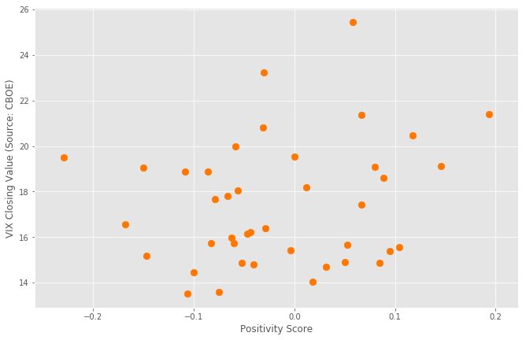
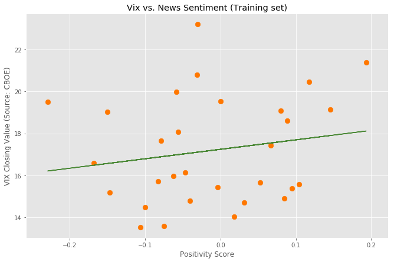
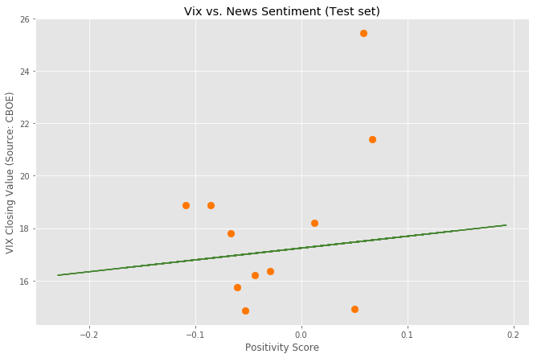

Financial news headlines from the New York Times, were passed to a Google API to get a sentiment score from -1 to 1 of the news article. An average sentiment score for the day was then determined. The daily sentiment score of the news headlines and the closing values of the VIX are shown in a scatter plot here.

The sentiment scores and VIX closing values were then used in the supervised learning Linear Regression model from scikitlearn. Below are the training and testing results.

